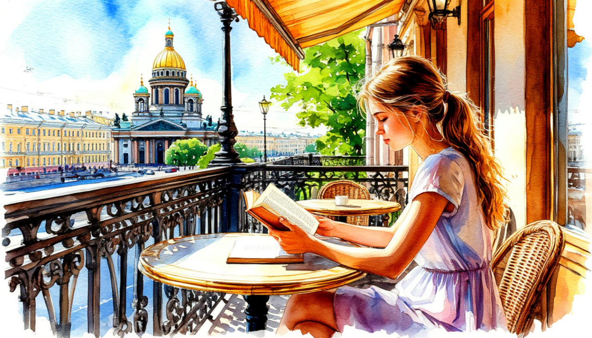

Привет, Санкт-Петербург | лайт

Даты тура: 11 - 15 июня | 2 - 6 июля | 16 - 20 июля | 30 июля - 3 августа | 6 - 10 августа
Стоимость тура:
- 25 000 р. - взрослый
- 24 800 р. - пенсионеры/студенты/школьники
- 30 500 р./чел - одноместное размещение
По программе:
- - Петропавловская крепость
- - Петергоф с Нижним Парком
- - Кронштадт
- - Остров Фортов
- - Никольский Морский Собор
- - Свободный день или экскурсия в Музей Фаберже (за доп. плату)
Программа тура:
1 день:
- 17-00- выезд из Костромы от ТРЦ "РИО"
2 день:
- Прибытие в Санкт-Петербург.
- Завтрак в кафе города.
- Обзорная экскурсия по городу. Вы сможете насладиться главными достопримечательностями Северной столицы и расширить свои знания об истории этого прекрасного города. Вы увидите Дворцовую набережную, Казанский собор, Михайловский замок, Марсово поле, храм Спаса-на-Крови, живописные виды реки Невы, домик Петра I, легендарный крейсер «Аврора», Петропавловская крепость и величественный Исаакиевский собор. Все эти места перестанут быть лишь изображениями на сувенирах и оживут перед вами благодаря увлекательным рассказам экскурсовода.
- Конечно же, посещение Медного всадника тоже обязательно включено в программу.
- Вы увидите Аничков мост, Казанский собор, величественный своими колоннадами, и узнаете его историю, тесно связанную с победами русской армии.
- Обед в кафе.
- Экскурсия по территории Петропавловской крепости. Эта историческая цитадель была основана Петром I в 1703 году на Заячьем острове и изначально выполняла оборонительную функцию, защищая молодой город. Сегодня, вместе с профессиональным гидом, вы пройдете по территории крепости, ознакомившись с её богатой историей.
- 22:30 Ночная экскурсия «Поющие мосты Петербурга». В это дивное, загадочное, чуть мистическое время так необычно смотрится знакомый город, его парадный исторический центр, его удивительные подсвеченные контуры мостов. Кульминацией экскурсии является разведение мостов, когда вздымаются вверх их могучие «крылья» и начинают свой проход караваны судов, идущие своим путем по реке в море...
- Стоимость 1500 руб./взрослый, 1 300 руб./дети до 15 лет.
- * Оплата при бронировании тура или сопровождающему группы.
За дополнительную плату (по желанию):
3 день:
- Завтрак в отеле «шведский стол»
- Свободный день ИЛИ
- Экскурсия в музей Фаберже – 1500 руб/чел – все категории.
- Среди роскошных интерьеров Шуваловского дворца вас ждёт уникальная коллекция изделий фирмы Фаберже — более 1000 предметов, среди которых самые знаменитые: ювелирные яйца, которые российские императоры преподносили императрицам.
- Гид расскажет вам об истории русского ювелирного искусства и покажет шедевры фирмы Фаберже.
- Вы увидите редкую коллекцию русских эмалей: шкатулки, портсигары, ковши расписаны миниатюрами на тему русских сказок, романтических сюжетов и военных побед.
- Здесь же — коллекция изысканных и забавных фарфоровых и серебряных изделий — императорские подарки удивят самого искушённого путешественника!
- Вас ждут:
- — всемирно известные яйца Фаберже — Коронационное, Ренессанс, Шантеклер — и не только они;
- — роскошные кабинетные и дипломатические подарки императоров;
- — портсигар императора и великого князя Сергея;
- — коллекция табакерок;
- — коллекция предметов из гильоширной эмали, в том числе принадлежавших импера
- — коллекция русских икон;
- — изделия с эмалевыми миниатюрами.
- Свободное время в городе после окончания экскурсии. До отеля туристы едут самостоятельно.
За дополнительную плату (по желанию) СТРОГО ПРИ БРОНИРОВАНИИ ТУРА:
4 день:
- Завтрак в отеле «шведский стол»
- Начало экскурсии "Дорогою царей и фаворитов" - Отправляемся в Петергоф или как его называют "Русская Версалия. Автобусная экскурсия по старой Петергофской дороге, в ходе которой вы узнаете о дворцовых и парковых ансамблях, расположившихся вдоль нее.
- Экскурсия по Нижнему парку Петергофа — обязательное мероприятие для всех гостей Санкт-Петербурга. Парк поражает своей красотой и размерами, занимая территорию около 102,5 гектаров, что почти втрое превышает площадь Московского Кремля. Центральным элементом ансамбля является великолепный фонтан «Самсон, разрывающий пасть льву». Здесь также расположены фонтаны-шутихи, воссоздающие атмосферу веселья времен Петра Великого, когда вода неожиданно окатывала прохожих. Любопытные местные обитатели — белочки — будут рады вашим лакомствам.
- Обед в кафе.
- Путевая экскурсия по трассе «Кронштадт – город морской славы». «Уходим под воду!» на глубину 28 метров под Морским каналом по подземному туннелю (его длина около 2 км), который соединяет Южный берег Финского залива с островом Котлин.
- В ходе трассовой экскурсии вы узнаете об истории строительства Петербургской дамбы и города Кронштадта.
- Обзорная автобусно-пешеходная экскурсия по г. Кронштадту. В ходе экскурсии Вы в полной мере ощутите дух этого места, увидите удивительные оборонительные и гидротехнические сооружения, памятник адмиралу Макарову, Петровскую пристань, Итальянский дворец, здание Арсенала.
- Экскурсия в величественный Морской собор.
- Остановка на «Острове фортов». Во время экскурсии Вы пройдете по Аллее героев российского флота, посетите Маяк памяти. На маяке запечатлены имена и звания 200 героев — адмиралов, офицеров, мичманов и матросов, начиная с эпохи Петра I и заканчивая нашим временем.
- Вы увидите и сможете прокатится на панорамных качелях, а также с берега парка «Остров фортов» открывается удивительный вид. Здесь можно потеряться во времени, наблюдая за гаванью в стационарные смотровые бинокли. Сделаем остановку у Нулевого километра - символической точки отсчета, показывающая расстояние от «колыбели российского флота» — Кронштадта — до ключевых отечественных и зарубежных портовых городов.
- Поздний обед в кафе.
- 17-00 выезд из города.
5 день:
Прибытие в Кострому в первой половине дня (ориентировочно)
В стоимость тура входит:
- - проживание в гостинице*
- * "Отель Гранд Каньон" 3* (Номер реестровой записи: С782024000931)
- - питание: 3 завтрака + 2 обеда
- - услуги гида-экскурсовода
- - экскурсионная программа
- - автобусное обслуживание по программе тура
Дополнительно оплачиваются (по желанию):
- - Ночная экскурсия по городу. Стоимость 1500 руб./взрослые, 1300 руб./дети до 15 лет. Оплата при бронировании тура или сопровождающему группы.
- - Экскурсия в музей Фаберже. СТРОГО ПРИ БРОНИРОВАНИИ ТУРА. Стоимость 1500 руб./чел. – все категории.
- Для бронирования необходимы данные паспорта РФ и свидетельства о рождении, если с вами путешествуют дети
- Предоплата – 50% от стоимости тура. Остаток за 30 дней до даты выезда.
- Любой тур можно оформить не выходя из дома. Подробнее: Тут
Стоимость тура не зафиксированы и могут быть изменены в большую или меньшую сторону в зависимости от уровня спроса в любой момент.
Время начала экскурсий и их порядок указано ориентировочно.
Фирма-исполнитель оставляет за собой право замены экскурсий без уменьшения общего объема экскурсионной программы.
По вопросам бронирования обращайтесь: